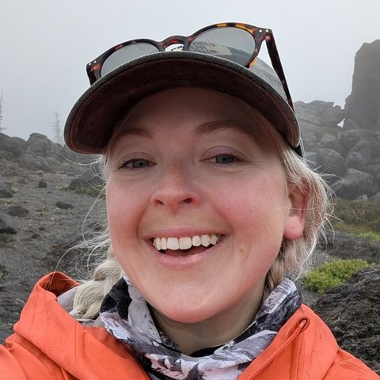

Experience
Protocol Buffers
May 2025 – Aug 2026Google's data-serialization library, used across Google and by open-source projects, including Cloud customers.
Retiring Java Proto 1 after 10+ years
Set up and drove a phased deprecation program for a protobuf version deprecated for over a decade: phasing, timeline, support model, escalation path, and tracking, approved by the Director of Engineering. Wrote a script to remove obsolete files and map remaining usage across 40+ dependent teams, and negotiated a freeze on new usage, which ended the allowlist approvals that cost protobuf engineers several reviews every week.
Result: On track for full turndown, with zero incidents, when I left.
Making breaking protobuf releases safe for Google Cloud customers
After a release disrupted major Google Cloud customers, I ran 1:1 interviews and a retrospective, published a one-pager of fixes, and led a recurring sync across protobuf, Cloud Client Libraries, and gRPC.
Result: The next 2 breaking releases shipped with zero customer escalations.
Getting the stalled protobuf–Cloud SDK program back on track
Named an owner for each workstream, built a central project hub, and set a regular status cadence.
Result: Nearly every workstream delivered an initial artifact within 2 months.
Reducing protobuf's on-duty rotation with an ops dashboard
Built an ops dashboard and used support-request trends to show where on-duty time was actually going.
Result: Cut the rotation from 2 engineers to 1, returning capacity to roadmap work.
Languages
May 2024 – May 2025Coding standards, style guides, and code readability across Google's programming languages.
- Extended Google's code-readability program to open source. Turned a draft into a milestone plan, built the program site, guides, and feedback forms, and recruited volunteer authors and mentors.
- Owned communications for a customer outreach program, and delivered an insights summary that gave leadership org-wide visibility.
- Designed a structured intake process for the C++ Style Guide working group, with request categories and response-time targets.
TAO: Tooling, Architecture & Optimization
Jan 2022 – May 2024Google's engineering efficiency org, focused on performance and compute cost across Google's services.
- Migrated ~24 fleet-wide profiling data pipelines to a new database platform (SQL refactoring, historical backfills), and fixed bugs in the efficiency dashboards executives used to track performance.
- Ran the optimization review committee: intake, review, and approval for ~30 proposals to reduce compute cost across Google.
- Owned the quarterly business reviews and newsletter. Published within 30 days of quarter end, the team's earliest ever.
- Covered a senior TPM's full portfolio during a multi-month leave while keeping my own programs on track.
Before Google
Engineering, a TPM apprenticeship, and teachingAnalyzed customer failure data across retail hardware with storage engineering and retail teams, isolated root causes, and recommended structured data intake for future telemetry. Built a Power BI dashboard for ROI, impact, and OKR status.
Built and A/B tested features for Avvo.com's consumer services (lawyer profiles, search, Q&A, and messaging) on a Rails, Elixir/Phoenix, Vue, and React stack, with 10% faster page loads, top-3 Google rankings, and higher engagement. Took on PM and TPM duties for my team during a period of attrition.
Designed curriculum and led cohorts of 20+ students through a 6-month intensive that prepared them for internships at Amazon, Google, Microsoft, and other Seattle tech companies, with a 90–94% post-internship hire rate.
Created the curriculum for and taught all four upper school computer science courses.

Hiring a TPM in Seattle?
I'm open to TPM roles in the Seattle area and on remote-friendly teams.